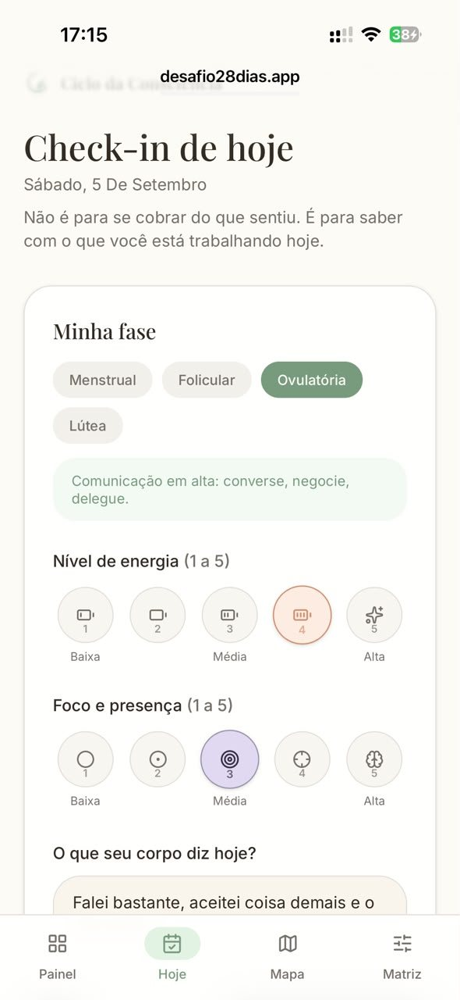
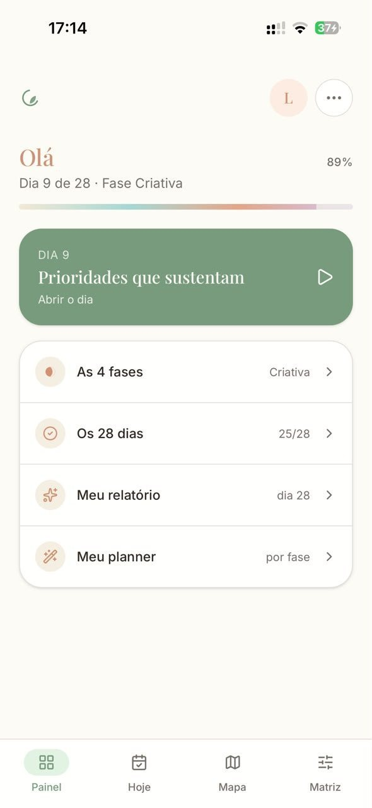
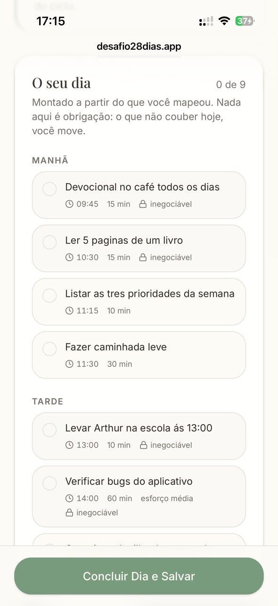
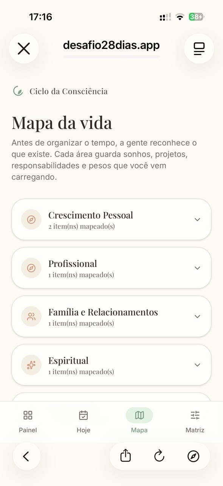
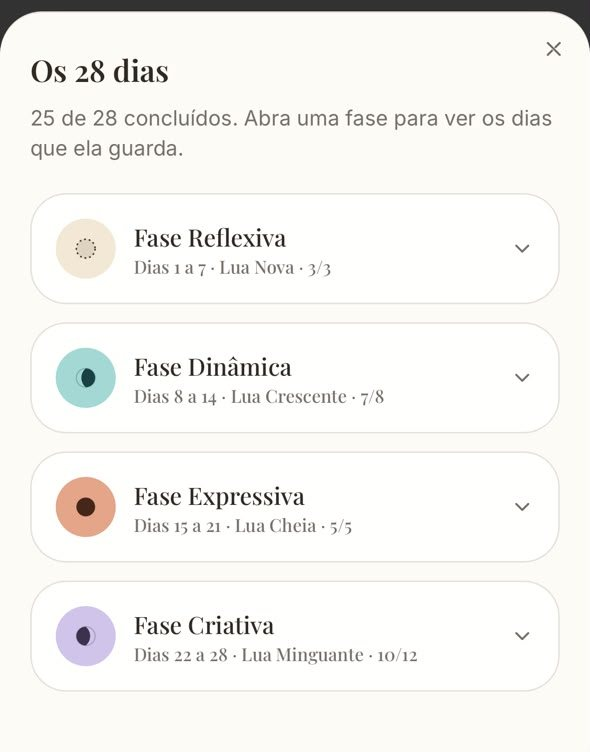

“Eu nunca consigo manter uma rotina.”
Você não precisa de mais uma rotina. Precisa de um plano que acompanhe você.
Em 28 dias, uma inteligência artificial transforma sua vida real, suas metas, projetos, hábitos e responsabilidades em um plano de execução organizado de acordo com o seu ciclo e com a forma como você funciona.
Desafio Ciclo da Consciência. Pagamento único. Acesso vitalício.



Você já viveu esse ciclo?
Se isso parece familiar, talvez o problema nunca tenha sido a sua disciplina.
- Você começa uma rotina nova, cheia de vontade.
- Organiza a semana, baixa um aplicativo, cria um planner.
- Fica extremamente produtiva por alguns dias.
- Depois, sem motivo aparente, a energia muda.
- As tarefas começam a atrasar.
- A rotina para de funcionar.
- Vem a culpa, a sensação de ter falhado de novo.
- E, na segunda-feira seguinte, você tenta recomeçar.
Talvez o problema não seja a sua capacidade de executar
Talvez você esteja tentando executar tudo da mesma maneira, todos os dias, mesmo quando sua energia, sua disposição e sua fase de vida mudam constantemente.
A pergunta muda. Não é mais “como eu faço para ter mais disciplina”. É “como eu organizo minhas demandas considerando como eu realmente funciono”.
A rotina tradicional espera que você seja igual todos os dias
Segunda igual a terça, igual a quarta, igual a quinta. Mesmas expectativas, mesma distribuição de tarefas, mesma cobrança, todos os dias.
A vida pode continuar acontecendo todos os dias. A forma de organizar e executar as suas demandas é que pode, e deve, mudar.
Conheça o Ciclo da Consciência
Um sistema de planejamento cíclico que usa inteligência artificial para transformar a sua vida real em um plano de execução personalizado de 28 dias.
Mapeamento: você conta para o sistema como é a sua vida hoje, suas metas, projetos, hábitos, tarefas fixas, trabalho, casa, relacionamento e também informações sobre o seu ciclo.
Inteligência artificial: a IA organiza essas informações, identifica prioridades e entende o que cada tarefa exige de você.
Plano de 28 dias: você recebe um plano de execução distribuído ao longo dos 28 dias, considerando sua energia e suas fases.
Execução diária: uma checklist simples mostra o que fazer a cada dia, sem excesso de tarefas.
Check-in: ao final do dia, você registra rapidamente como foi sua energia e sua execução.
Padrões: ao longo do desafio, o sistema observa como você funciona de verdade.
Relatório: no final dos 28 dias, você recebe um relatório com os seus padrões de execução.
Planner cíclico: e um planner personalizado para continuar organizando sua vida depois do desafio.
Método CICLO
- CConhecer sua realidade
- IIdentificar suas demandas
- CCruzar com o seu ciclo
- LLocalizar cada ação no melhor momento
- OObservar seus padrões
O que está incluso no Desafio Ciclo da Consciência
- 01
Mapeamento completo da sua vida: uma entrevista estruturada para entender suas principais áreas.
- 02
Plano de ação personalizado de 28 dias, criado a partir das suas informações.
- 03
Checklist diária com o que fazer em cada dia.
- 04
Planejamento por fases, com suas demandas organizadas de acordo com o seu ciclo e suas características individuais.
- 05
Check-ins para acompanhar como você está durante o desafio.
- 06
Identificação de padrões ao longo dos 28 dias.
- 07
Relatório personalizado com uma leitura dos seus padrões de execução.
- 08
Planner Cíclico Personalizado para continuar usando depois do desafio.


O que torna esse sistema diferente
Você não recebe uma rotina pronta. A sua rotina é construída a partir de você.
| Ferramenta | O que entrega |
|---|---|
| Planner tradicional | Estrutura |
| Aplicativo de tarefas | Organização |
| Curso de produtividade | Conhecimento |
| Calendário menstrual | Acompanhamento do ciclo |
| Ciclo da Consciência | Estratégia personalizada de execução |
A transformação
“Estou entendendo por que algumas coisas funcionam melhor em determinados momentos.”
“Agora eu sei como organizar minhas demandas de acordo com a forma como funciono.”
Você não vai virar uma mulher superprodutiva. Vai parar de lutar contra você mesma para conseguir executar a sua vida.
Quem já viveu o desafio
Espaço reservado
Aqui entram os depoimentos das participantes: foto ou iniciais, frase de destaque e resultado percebido. Ainda não foram enviados.
Desafio Ciclo da Consciência, 28 dias
R$ 37
Pagamento único. Acesso vitalício.
Perguntas frequentes
Todo ciclo dura 28 dias?
Não necessariamente. O desafio usa 28 dias como período de acompanhamento e implementação. A organização das suas fases é personalizada de acordo com as informações que você compartilha sobre o seu próprio ciclo.
Funciona se meu ciclo for irregular?
Sim. Durante o mapeamento, você informa a duração habitual do seu ciclo, sintomas e padrões percebidos, e o sistema trabalha com essas informações.
Preciso ter disciplina para participar?
Não. O sistema foi criado para quem sente que já tentou de tudo e não conseguiu sustentar uma rotina. A proposta é organizar sua vida de um jeito diferente, não exigir mais disciplina.
Quanto tempo preciso dedicar por dia?
O plano é construído considerando sua realidade e sua disponibilidade, com uma prioridade principal por dia e tarefas organizadas por nível de energia.
O Ciclo da Consciência substitui acompanhamento médico ou psicológico?
Não. O sistema organiza comportamentos e compromissos que você mesma define. Ele não realiza diagnóstico nem substitui orientação médica ou terapêutica.
Como recebo o acesso?
[preencher: fluxo de acesso, a confirmar]
Você não precisa recomeçar
Precisa de um plano que acompanhe você. O Ciclo da Consciência usa inteligência artificial para transformar a sua vida real em uma estratégia de execução personalizada para os próximos 28 dias.